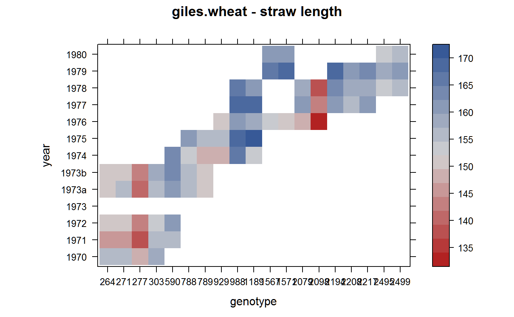

giles.wheat.RdStraw length and ear emergence for wheat genotypes. Data are unbalanced with respect to experiment year and genotype.
data("giles.wheat")
A data frame with 247 observations on the following 4 variables.
gengenotype. Note, this is numeric!
envenvironment
strawstraw length
emergenceear emergence, Julian date
Highly unbalanced data of straw length and ear emergence date for wheat genotypes.
The 'genotype' column is called 'Accession number' in original data. The genotypes were chosen to represent the range of variation in the trait.
The Julian date was found to be preferable to other methods (such as days from sowing).
Piepho (2003) fit a bilinear model to the straw emergence data. This is similar to Finlay-Wilkinson regression.
R. Giles (1990). Utilization of unreplicated observations of agronomic characters in a wheat germplasm collection. In: Wheat Genetic Resources. Meeting Diverse Needs. Wiley, Chichester, U.K., pp.113-130.
Piepho, HP (2003). Model-based mean adjustment in quantitative germplasm evaluation data. Genetic Resources and Crop Evolution, 50, 281-290. http://doi.org/10.1023/A:1023503900759
# \dontrun{ library(agridat) data(giles.wheat) dat <- giles.wheat dat <- transform(dat, gen=factor(gen)) dat <- transform(dat, env=factor(env)) dat1 <- subset(dat, !is.na(straw)) dat2 <- subset(dat, !is.na(emergence)) # Traits are not related # with(dat, plot(straw~emergence)) # Show unbalancedness of data libs(lattice, reshape2) redblue <- colorRampPalette(c("firebrick", "lightgray", "#375997")) levelplot(acast(dat, gen ~ env, value.var='emergence'), col.regions=redblue, xlab="genotype", ylab="year", main="giles.wheat - straw length")#> #>#> #> #># Mean across years. Matches Piepho Table 7 'Simple' m1 = lm(straw ~ gen, data=dat1) emmeans(m1, 'gen')#> gen emmean SE df lower.CL upper.CL #> 264 113.7 6.78 40 100.0 127.4 #> 271 89.2 5.87 40 77.4 101.1 #> 277 110.7 6.78 40 97.0 124.4 #> 303 73.7 6.78 40 60.0 87.4 #> 590 35.7 6.78 40 22.0 49.4 #> 788 84.3 6.78 40 70.6 98.0 #> 789 107.7 6.78 40 94.0 121.4 #> 929 81.3 6.78 40 67.6 95.0 #> 988 132.7 6.78 40 119.0 146.4 #> 1189 131.0 5.87 40 119.1 142.9 #> 1567 68.3 6.78 40 54.6 82.0 #> 1571 79.0 6.78 40 65.3 92.7 #> 2079 96.3 6.78 40 82.6 110.0 #> 2098 83.0 6.78 40 69.3 96.7 #> 2194 78.7 6.78 40 65.0 92.4 #> 2208 54.0 6.78 40 40.3 67.7 #> 2217 103.3 6.78 40 89.6 117.0 #> 2495 82.3 6.78 40 68.6 96.0 #> 2499 111.3 6.78 40 97.6 125.0 #> #> Confidence level used: 0.95# Simple two-way model. NOT the bi-additive model of Piepho. m2 = lm(straw ~ gen + env, data=dat1) emmeans(m2, 'gen')#> gen emmean SE df lower.CL upper.CL #> 264 124.3 7.52 30 109.0 139.7 #> 271 97.9 6.35 30 85.0 110.9 #> 277 121.3 7.52 30 106.0 136.7 #> 303 84.3 7.52 30 69.0 99.7 #> 590 45.9 6.16 30 33.3 58.4 #> 788 82.0 5.65 30 70.5 93.6 #> 789 105.4 5.65 30 93.8 116.9 #> 929 78.5 5.41 30 67.5 89.6 #> 988 128.9 5.40 30 117.9 139.9 #> 1189 128.5 4.78 30 118.7 138.3 #> 1567 64.1 6.32 30 51.2 77.0 #> 1571 74.8 6.32 30 61.9 87.7 #> 2079 92.6 6.01 30 80.3 104.9 #> 2098 79.3 6.01 30 67.0 91.5 #> 2194 73.2 6.24 30 60.4 85.9 #> 2208 48.5 6.24 30 35.8 61.3 #> 2217 97.9 6.24 30 85.1 110.6 #> 2495 74.1 6.56 30 60.7 87.5 #> 2499 103.1 6.56 30 89.7 116.5 #> #> Results are averaged over the levels of: env #> Confidence level used: 0.95# Bi-additive model. Matches Piepho Table 6, rows (c) libs(gnm) m3 <- gnm(straw ~ env + Mult(gen,env), data=dat1)#> Initialising #> Running start-up iterations.. #> Running main iterations......................................................... #> ....................... #> Done#> adjusted gen env straw emergence #> 1 120 264 1970 121 156 #> 2 94 271 1970 90 155 #> 3 117 277 1970 117 148 #> 4 83 303 1970 86 159 #> 20 91 264 1971 90 146 #> 21 67 271 1971 68 146 #> 22 89 277 1971 89 137 #> 23 56 303 1971 57 157 #> 24 28 590 1971 27 157 #> 39 130 264 1972 130 150 #> 40 96 271 1972 98 152 #> 41 126 277 1972 126 143 #> 42 81 303 1972 78 154 #> 43 41 590 1972 42 161 #> 59 101 271 1973 101 NA #> 63 80 788 1973 80 NA #> 64 96 789 1973 96 NA #> 81 38 590 1974 38 163 #> 82 85 788 1974 82 154 #> 83 106 789 1974 112 147 #> 84 81 929 1974 81 149 #> 85 121 988 1974 124 165 #> 86 126 1189 1974 120 154 #> 101 89 788 1975 91 160 #> 102 119 789 1975 115 155 #> 103 83 929 1975 83 157 #> 104 142 988 1975 144 169 #> 105 148 1189 1975 149 170 #> 122 79 929 1976 80 151 #> 124 115 1189 1976 110 158 #> 125 67 1567 1976 60 153 #> 126 76 1571 1976 80 151 #> 127 89 2079 1976 100 148 #> 128 83 2098 1976 80 134 #> 142 133 988 1977 130 168 #> 143 139 1189 1977 145 168 #> 146 91 2079 1977 85 161 #> 147 78 2098 1977 75 143 #> 148 72 2194 1977 75 161 #> 149 47 2208 1977 50 157 #> 150 99 2217 1977 100 161 #> 165 103 2079 1978 104 158 #> 166 90 2098 1978 94 139 #> 167 83 2194 1978 76 163 #> 168 56 2208 1978 57 158 #> 169 111 2217 1978 112 158 #> 170 81 2495 1978 82 153 #> 171 121 2499 1978 120 156 #> 182 61 1567 1979 65 166 #> 183 75 1571 1979 75 169 #> 186 80 2194 1979 85 169 #> 187 60 2208 1979 55 162 #> 188 101 2217 1979 98 164 #> 189 78 2495 1979 75 159 #> 190 109 2499 1979 110 162 #> 201 79 1567 1980 80 162 #> 202 86 1571 1980 82 160 #> 208 88 2495 1980 90 153 #> 209 104 2499 1980 104 157# ----- Analysis of Ear emergence ----- # Simple two-way model. m4 = lm(emergence ~ 1 + gen + env, data=dat2) emmeans(m4, c('gen','env')) # Matches Piepho Table 9. rpws (c)#> gen env emmean SE df lower.CL upper.CL #> 264 1970 155 1.31 43 152 157 #> 271 1970 156 1.31 43 153 159 #> 277 1970 146 1.31 43 144 149 #> 303 1970 161 1.31 43 158 164 #> 590 1970 167 1.51 43 164 170 #> 788 1970 160 1.72 43 156 163 #> 789 1970 154 1.72 43 151 158 #> 929 1970 156 2.16 43 152 161 #> 988 1970 168 2.10 43 164 173 #> 1189 1970 164 2.10 43 160 168 #> 1567 1970 160 2.51 43 155 166 #> 1571 1970 160 2.51 43 155 165 #> 2079 1970 158 2.43 43 153 163 #> 2098 1970 141 2.43 43 136 146 #> 2194 1970 162 2.48 43 157 167 #> 2208 1970 157 2.48 43 152 162 #> 2217 1970 159 2.48 43 154 164 #> 2495 1970 153 2.54 43 148 158 #> 2499 1970 156 2.54 43 151 161 #> 264 1971 146 1.25 43 144 149 #> 271 1971 148 1.25 43 145 150 #> 277 1971 138 1.25 43 135 141 #> 303 1971 153 1.25 43 150 155 #> 590 1971 158 1.28 43 156 161 #> 788 1971 151 1.62 43 148 155 #> 789 1971 146 1.62 43 143 149 #> 929 1971 148 2.06 43 144 152 #> 988 1971 160 2.00 43 156 164 #> 1189 1971 156 2.00 43 152 160 #> 1567 1971 152 2.43 43 147 157 #> 1571 1971 152 2.43 43 147 157 #> 2079 1971 149 2.34 43 145 154 #> 2098 1971 132 2.34 43 128 137 #> 2194 1971 154 2.40 43 149 158 #> 2208 1971 148 2.40 43 143 153 #> 2217 1971 150 2.40 43 145 155 #> 2495 1971 145 2.46 43 140 150 #> 2499 1971 148 2.46 43 143 153 #> 264 1972 150 1.25 43 147 152 #> 271 1972 151 1.25 43 148 154 #> 277 1972 141 1.25 43 139 144 #> 303 1972 156 1.25 43 154 159 #> 590 1972 162 1.28 43 159 164 #> 788 1972 155 1.62 43 152 158 #> 789 1972 149 1.62 43 146 153 #> 929 1972 151 2.06 43 147 156 #> 988 1972 163 2.00 43 159 168 #> 1189 1972 159 2.00 43 155 163 #> 1567 1972 156 2.43 43 151 160 #> 1571 1972 155 2.43 43 150 160 #> 2079 1972 153 2.34 43 148 158 #> 2098 1972 136 2.34 43 131 141 #> 2194 1972 157 2.40 43 152 162 #> 2208 1972 152 2.40 43 147 157 #> 2217 1972 154 2.40 43 149 159 #> 2495 1972 148 2.46 43 143 153 #> 2499 1972 151 2.46 43 146 156 #> 264 1973a 151 1.20 43 149 154 #> 271 1973a 152 1.20 43 150 155 #> 277 1973a 143 1.20 43 140 145 #> 303 1973a 158 1.20 43 155 160 #> 590 1973a 163 1.18 43 161 165 #> 788 1973a 156 1.33 43 154 159 #> 789 1973a 151 1.33 43 148 153 #> 929 1973a 153 1.87 43 149 157 #> 988 1973a 165 1.81 43 161 169 #> 1189 1973a 161 1.81 43 157 164 #> 1567 1973a 157 2.28 43 152 162 #> 1571 1973a 157 2.28 43 152 161 #> 2079 1973a 154 2.18 43 150 159 #> 2098 1973a 137 2.18 43 133 142 #> 2194 1973a 158 2.24 43 154 163 #> 2208 1973a 153 2.24 43 149 158 #> 2217 1973a 155 2.24 43 151 160 #> 2495 1973a 149 2.31 43 145 154 #> 2499 1973a 153 2.31 43 148 157 #> 264 1973b 152 1.20 43 150 154 #> 271 1973b 153 1.20 43 151 156 #> 277 1973b 144 1.20 43 141 146 #> 303 1973b 158 1.20 43 156 161 #> 590 1973b 164 1.18 43 161 166 #> 788 1973b 157 1.33 43 154 160 #> 789 1973b 151 1.33 43 149 154 #> 929 1973b 154 1.87 43 150 157 #> 988 1973b 166 1.81 43 162 169 #> 1189 1973b 161 1.81 43 158 165 #> 1567 1973b 158 2.28 43 153 162 #> 1571 1973b 157 2.28 43 153 162 #> 2079 1973b 155 2.18 43 151 159 #> 2098 1973b 138 2.18 43 134 142 #> 2194 1973b 159 2.24 43 155 164 #> 2208 1973b 154 2.24 43 149 158 #> 2217 1973b 156 2.24 43 151 160 #> 2495 1973b 150 2.31 43 145 155 #> 2499 1973b 153 2.31 43 149 158 #> 264 1974 148 1.66 43 145 152 #> 271 1974 150 1.66 43 146 153 #> 277 1974 140 1.66 43 137 143 #> 303 1974 155 1.66 43 152 158 #> 590 1974 160 1.43 43 157 163 #> 788 1974 153 1.33 43 151 156 #> 789 1974 148 1.33 43 145 151 #> 929 1974 150 1.42 43 147 153 #> 988 1974 162 1.33 43 159 165 #> 1189 1974 158 1.33 43 155 161 #> 1567 1974 154 1.93 43 150 158 #> 1571 1974 154 1.93 43 150 158 #> 2079 1974 152 1.81 43 148 155 #> 2098 1974 135 1.81 43 131 138 #> 2194 1974 156 1.88 43 152 159 #> 2208 1974 150 1.88 43 147 154 #> 2217 1974 152 1.88 43 149 156 #> 2495 1974 147 1.96 43 143 151 #> 2499 1974 150 1.96 43 146 154 #> 264 1975 156 1.80 43 153 160 #> 271 1975 158 1.80 43 154 161 #> 277 1975 148 1.80 43 144 152 #> 303 1975 163 1.80 43 159 166 #> 590 1975 168 1.66 43 165 172 #> 788 1975 161 1.41 43 159 164 #> 789 1975 156 1.41 43 153 159 #> 929 1975 158 1.42 43 155 161 #> 988 1975 170 1.33 43 167 173 #> 1189 1975 166 1.33 43 163 169 #> 1567 1975 162 1.93 43 158 166 #> 1571 1975 162 1.93 43 158 166 #> 2079 1975 159 1.81 43 156 163 #> 2098 1975 142 1.81 43 139 146 #> 2194 1975 164 1.88 43 160 167 #> 2208 1975 158 1.88 43 154 162 #> 2217 1975 160 1.88 43 156 164 #> 2495 1975 155 1.96 43 151 159 #> 2499 1975 158 1.96 43 154 162 #> 264 1976 147 2.07 43 143 152 #> 271 1976 149 2.07 43 144 153 #> 277 1976 139 2.07 43 135 143 #> 303 1976 154 2.07 43 150 158 #> 590 1976 159 1.92 43 155 163 #> 788 1976 152 1.78 43 149 156 #> 789 1976 147 1.78 43 143 151 #> 929 1976 149 1.48 43 146 152 #> 988 1976 161 1.23 43 159 164 #> 1189 1976 157 1.23 43 154 159 #> 1567 1976 153 1.46 43 150 156 #> 1571 1976 153 1.46 43 150 156 #> 2079 1976 150 1.39 43 148 153 #> 2098 1976 133 1.39 43 131 136 #> 2194 1976 155 1.58 43 151 158 #> 2208 1976 149 1.58 43 146 152 #> 2217 1976 151 1.58 43 148 154 #> 2495 1976 146 1.63 43 142 149 #> 2499 1976 149 1.63 43 146 152 #> 264 1977 156 2.14 43 152 161 #> 271 1977 157 2.14 43 153 162 #> 277 1977 148 2.14 43 144 152 #> 303 1977 163 2.14 43 158 167 #> 590 1977 168 1.99 43 164 172 #> 788 1977 161 1.86 43 157 165 #> 789 1977 156 1.86 43 152 159 #> 929 1977 158 1.69 43 154 161 #> 988 1977 170 1.25 43 167 172 #> 1189 1977 166 1.25 43 163 168 #> 1567 1977 162 1.64 43 159 165 #> 1571 1977 162 1.64 43 158 165 #> 2079 1977 159 1.37 43 157 162 #> 2098 1977 142 1.37 43 140 145 #> 2194 1977 163 1.38 43 161 166 #> 2208 1977 158 1.38 43 155 161 #> 2217 1977 160 1.38 43 157 163 #> 2495 1977 154 1.62 43 151 158 #> 2499 1977 158 1.62 43 155 161 #> 264 1978 154 2.12 43 150 158 #> 271 1978 155 2.12 43 151 160 #> 277 1978 146 2.12 43 141 150 #> 303 1978 160 2.12 43 156 165 #> 590 1978 166 1.98 43 162 170 #> 788 1978 159 1.84 43 155 163 #> 789 1978 154 1.84 43 150 157 #> 929 1978 156 1.67 43 152 159 #> 988 1978 168 1.23 43 165 170 #> 1189 1978 164 1.23 43 161 166 #> 1567 1978 160 1.54 43 157 163 #> 1571 1978 160 1.54 43 156 163 #> 2079 1978 157 1.35 43 154 160 #> 2098 1978 140 1.35 43 137 143 #> 2194 1978 161 1.34 43 159 164 #> 2208 1978 156 1.34 43 153 159 #> 2217 1978 158 1.34 43 155 161 #> 2495 1978 152 1.41 43 149 155 #> 2499 1978 156 1.41 43 153 158 #> 264 1979 161 2.27 43 156 166 #> 271 1979 162 2.27 43 158 167 #> 277 1979 153 2.27 43 148 157 #> 303 1979 167 2.27 43 163 172 #> 590 1979 173 2.13 43 169 177 #> 788 1979 166 2.01 43 162 170 #> 789 1979 161 2.01 43 156 165 #> 929 1979 163 1.82 43 159 166 #> 988 1979 175 1.48 43 172 178 #> 1189 1979 170 1.48 43 167 173 #> 1567 1979 167 1.41 43 164 170 #> 1571 1979 166 1.41 43 164 169 #> 2079 1979 164 1.59 43 161 167 #> 2098 1979 147 1.59 43 144 150 #> 2194 1979 168 1.40 43 165 171 #> 2208 1979 163 1.40 43 160 166 #> 2217 1979 165 1.40 43 162 168 #> 2495 1979 159 1.38 43 156 162 #> 2499 1979 163 1.38 43 160 165 #> 264 1980 155 2.43 43 150 160 #> 271 1980 156 2.43 43 152 161 #> 277 1980 147 2.43 43 142 152 #> 303 1980 162 2.43 43 157 167 #> 590 1980 167 2.31 43 162 172 #> 788 1980 160 2.19 43 156 165 #> 789 1980 155 2.19 43 150 159 #> 929 1980 157 2.01 43 153 161 #> 988 1980 169 1.73 43 165 172 #> 1189 1980 165 1.73 43 161 168 #> 1567 1980 161 1.48 43 158 164 #> 1571 1980 161 1.48 43 158 164 #> 2079 1980 158 1.83 43 155 162 #> 2098 1980 141 1.83 43 138 145 #> 2194 1980 162 1.79 43 159 166 #> 2208 1980 157 1.79 43 154 161 #> 2217 1980 159 1.79 43 156 163 #> 2495 1980 153 1.48 43 150 156 #> 2499 1980 157 1.48 43 154 160 #> #> Confidence level used: 0.95emmeans(m4, 'gen') # Match Piepho table 10, Least Squares column#> gen emmean SE df lower.CL upper.CL #> 264 153 1.31 43 150 155 #> 271 154 1.31 43 151 157 #> 277 144 1.31 43 142 147 #> 303 159 1.31 43 156 162 #> 590 165 1.20 43 162 167 #> 788 158 1.19 43 155 160 #> 789 152 1.19 43 150 155 #> 929 154 1.35 43 152 157 #> 988 166 1.11 43 164 169 #> 1189 162 1.11 43 160 164 #> 1567 159 1.58 43 155 162 #> 1571 158 1.58 43 155 161 #> 2079 156 1.50 43 153 159 #> 2098 139 1.50 43 136 142 #> 2194 160 1.55 43 157 163 #> 2208 155 1.55 43 152 158 #> 2217 157 1.55 43 154 160 #> 2495 151 1.60 43 148 154 #> 2499 154 1.60 43 151 158 #> #> Results are averaged over the levels of: env #> Confidence level used: 0.95# }